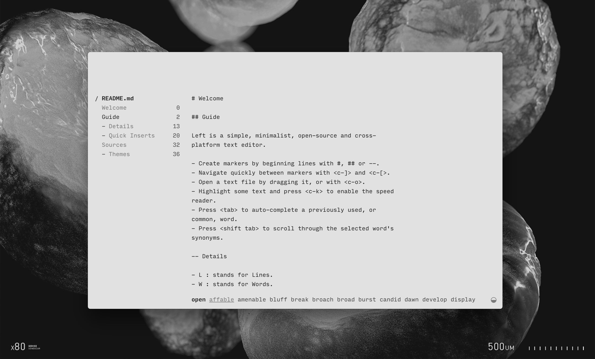
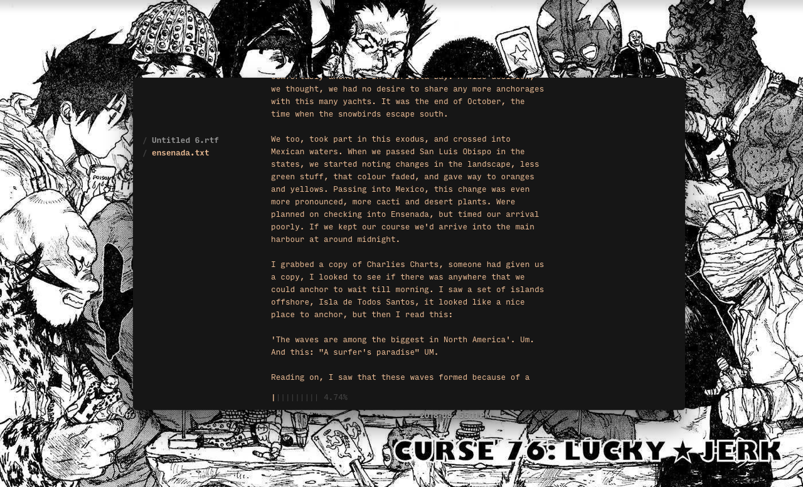

left
- introduction
- sustainability
- lefbit
- download
- trailer
- tutorial
- creating a new file
- importing an existing file
- writing
- features
- shortcut quick list
introduction
Left is distractionless plaintext editor designed to quickly navigate between segments of an essay, or multiple documents. It features an auto-complete, synonyms suggestions, writing statistics, markup-based navigation and a speed-reader.

lefbit

Meet Lefbit, the mascot for Left. Lefbit is there to talk about updates relating to Left.
story
Back in 2016 when first operating on a sailboat, we experienced frequent failures with both software & hardware, largely due to our small energy storage and lack of reliable connectivity. The solution was to create tools that would be better suited to our needs. The objective was to replace the bloated, closed-source or subscription software that we were using to do creative work, such as Photoshop, Xcode and Ableton. We were somewhat familiar with web technologies, so we decided to build our programs on this new framework called Electron.
While solving some of our issues, Electron was rapidly increasing in size and soon joined the rest of the software that we wanted to do away with. Our focus shifted toward reducing our energy use, and to ensure reliability by removing all dependencies.
To transition toward our new goals, we developed offline web versions as temporary stand-ins while researching ways to build more resilient software. We eventually ported our tools to C, but while we had achieved ideal energy usage, portability was still an issue, so we kept looking. We learnt 6502 assembly, seeing players run our NES game on all these different platforms gave us a new idea.
And so, in 2021 we took our biggest leap yet toward longtermism and designed a small virtual machine with a focus on implementability; meaning that moving forward, our software will live on a virtual machine. In other words, the code will stop having to be ported, but instead to make something available on a new platform would our needs or devices change, the emulator remains the only piece of code to be ported, which is explicitly designed to be easily implemented.
This is where we are now. uxn may solve our cross-platform issues, while being extremely light. It took us a long while to get here, we hope that one day the Uxn versions of our software replace the desktop and web versions [16.05.21].
Go slow, and fix things.
Distributions
The first version of Left was released on itch.io for desktop in 2017.
We have since released many more versions of Left. A web version was initially created to help Rekka with the writing of wiktopher, and later rewritten as a lightweight SDL graphical text editor. The web version features an auto-complete, synonyms suggestions, writing statistics, markup-based navigation and a speed-reader. These features will hopefully make their way into the new version.
There is also an even lighter, Uxn version in the works, written in Uxntal.
What is uxn?

tutorial
Launch the app. You'll see a main window, as well as a sidebar on the left. You'll be writing in the main window, the sidebar will list all of the markers and separate files that you create.
The app opens with a splash, listing a guide as well as a list of shortcuts. At the bottom left of the main window, there are numbers followed by letters:
- L stands for lines
- W for words
- V for vocabulary
- C for character.
As you write, these numbers will increase and you'll know exactly how many lines, words, characters and unique words there are in your text. These stats are followed by a percentage to show you where you are in the text, with 0% indicating the beginning, and 100% the end - this is useful when writing large texts.
creating a new file
Create a new file with ⌘ n (most of the shorts using 'command' combined with a letter or other character).
The main window will now be empty. If you look on the sidebar you will see the splash listed, you can return to it by selecting it or by using ⌘ ] and ⌘ [.
The file you created, by default is named 'untitled', you can rename it by saving the file using ⌘ n.
importing an existing file
Open a text file by dragging it over Left, or using the shortcut ⌘ o. You can close a file, by pressing ⌘ w.
writing
To better organize your text, you can create markers by beginning lines with:
# or ##
Using these will list them on the sidebar in different ways.
- # will create a main header.
- ## will create a sub-header.
The markers will be listed under your document name on the side bar, and whichever other document that you create will be listed underneath everything.
Once you have more than one marker, you can cycle through them using ⌘ ].
features
Left has many built-in features to help you write more efficiently, these include:
- A synonyms dictionary
- Auto-complete of words
- A speed reader
- A quick insert mode
Synonyms - The synonyms of every word, appear on the bottom of the main window, you can cycle through the synonyms of a selected word by keeping shift pressed down, and then pressing tab to cycle through them. When you release the keys, the word will be replaced with the selected word. You can undo this change with ⌘ z.
Autocomplete - You can press tab to auto-complete a previously used, or common, word.
Speed reader - to use it highlight some text and press ⌘ k to enable it. Press escape to stop it.
- Date - You can insert the current date into your text, by pressing the shortcut ⌘ d
- Time - Insert the current time into your text by pressing the shortcut ⌘ t
- Header - Create a header by pressing ⌘ h.
- Comment - Create a comment by pressing ⌘ /.
You can leave insert mode by pressing the escape key.
You can cycle between 3 fonts, using ⌘ < or ⌘ >. The font size can also be increased and decreased using ⌘ - and ⌘ +.
shortcut quick list
- Create markers by beginning lines with # or ##
- Navigate quickly between markers with ⌘ ] and ⌘ [
- Open a text file by dragging it, or with ⌘ o
- Highlight some text and press ⌘ k to enable the speed reader
- Press tab to auto-complete a previously used, or common, word
- Press shift tab to scroll through the selected word's synonyms
- ⌘ i Quick insert mode
- ⌘ d Date
- ⌘ t Time
- ⌘ p Path
- ⌘ h Header
- ⌘ H Sub-Header
- ⌘ / Comment
- ⌘ l Line
- Cycle between font styles using ⌘ < and ⌘ >
- Decrease font using ⌘ -
- Increase font using ⌘ +
license
The license applies to all the documented projects, the projects themselves and their assets. The source code of this website and our apps are under the MIT License, but the assets and text content of this website and of our apps are under the BY-NC-SA4.0 License. We are happy to pass knowledge, and that others can learn from our projects, improve on them, or make them into something else that is useful, but please, do not try to sell our projects as is under a different name. Doing so is very lazy, and disrespectful to us.
DO NOT resell or mint our work.
You can find our more recent projects on Sourcehut.
pull request
See the Github and Sourcehut repositories. Pull Requests are welcome, but please read our design philosophy first.